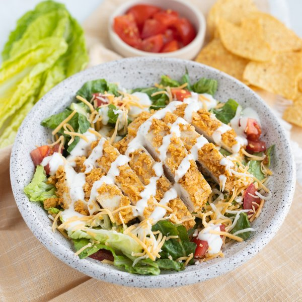

Tortilla Chip-Crusted Chicken Salad with Tomatoes, Cheese & Ranch

Total Time
30 min
Nutrition (Per Serving)
698.8 kcalCalories
49.4 gProtein
31.8 gCarbs
40.6 gFat
Full nutrition table
| Calories | 698.8 kcal |
| Total fat | 40.6 g |
| Saturated fat | 9.9 g |
| Trans fat | 0.1 g |
| Cholesterol | 163 mg |
| Sodium | 1128.3 mg |
| Carbohydrates | 31.8 g |
| Fiber | 5.4 g |
| Sugars | 5.9 g |
| Protein | 49.4 g |
| Potassium | 1165.5 mg |
| Calcium | 274.8 mg |
| Iron | 3.1 mg |
| Vitamin A | 10755.5 IU |
| Vitamin C | 13.2 mg |
| Vitamin D | 2.8 IU |
Cookware
Ingredients
- 1 ½ lbchicken breasts, boneless skinless
- ½ cupranch dressing
- 4 heartsromaine hearts
- 1 cupshredded cheese, Mexican blend
- 45 mltaco seasoning
- 2tomatoes
- 4 oztortilla chips
- black pepper
- extra virgin olive oil
- mayonnaise
- salt
Steps
- Preheat oven to 425°F. Line a baking sheet pan with aluminum foil and coat with a thin layer of oil; set aside.2 tsp extra virgin olive oil
- Place tortilla chips in a medium bowl and crush with the back of a spoon to create coarse crumbs. Add spices and stir to combine the coating.4 oz tortilla chips
3 tbsp taco seasoning
½ tsp salt
¼ tsp black pepper - Pat chicken dry with paper towels and place on a cutting board. Holding a knife parallel to the cutting board, cut the chicken in half horizontally to form thin cutlets.1 ½ lb chicken breasts, boneless skinless
- Spread mayo over both sides of the cutlets, then dredge in the coating, pressing gently to adhere. Transfer cutlets to the baking sheet.2 tbsp mayonnaise
- Place baking sheet in the oven (it doesn't have to be fully heated) and bake, flipping chicken halfway through, until golden and cooked through, 15-18 minutes. Remove from oven.
- Meanwhile, wash and dry tomatoes. Using a clean cutting board, medium dice, and place in a large bowl.2 tomatoes
- Wash, dry, and chop (or tear) lettuce into bite-sized pieces. Add to the bowl with the tomato, toss to combine the salad, and set aside.4 hearts romaine hearts
- When the chicken is done, slice into strips.
- To serve, divide salad between plates or bowls, then top with cheese and chicken. Drizzle with dressing. Enjoy!1 cup shredded cheese, Mexican blend
½ cup ranch dressing